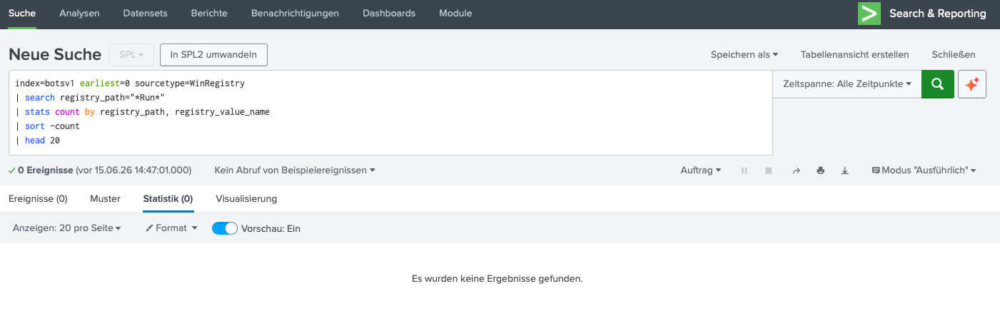

Kontext
In der Sysmon-Analyse haben wir osk.exe als Masquerading-Malware identifiziert.
Die Frage: Wie stellt die Malware sicher, dass sie bei jedem Systemstart
automatisch läuft?
Windows Registry Persistence
Die Windows-Registry enthält spezielle Run-Keys, die Programme bei jedem Login oder Systemstart automatisch ausführen. Malware nutzt diese Keys, um Persistence (Beständigkeit) zu erreichen.
Die wichtigsten Run-Keys:
- HKLM\Software\Microsoft\Windows\CurrentVersion\Run → Für alle Benutzer (Systemweit)
- HKCU\Software\Microsoft\Windows\CurrentVersion\Run → Nur für aktuellen Benutzer
- HKCU\Software\Microsoft\Windows\CurrentVersion\RunOnce → Einmalig beim nächsten Login
- HKLM\Software\Microsoft\Command Processor\AutoRun → Bei jedem CMD-Start
Warum Run-Keys? Einmal in die Registry geschrieben, läuft die Malware bei jedem Systemstart automatisch — ohne dass der Benutzer etwas bemerkt. Das ist die am häufigsten verwendete Persistence-Methode für Windows-Malware.
Die Analyse
Wir filtern alle Registry-Events, die Run-Keys betreffen, und gruppieren nach Key-Pfad und Wert.
Das Ergebnis zeigt 14 unique Run-Key-Einträge aus 24 total Events. Die Top-Einträge sind eindeutig schädlich.

Abb. 1 — Registry-Run-Keys: osk.exe in Run und RunOnce, internat.exe als System-Weit-Persistence
Die Erkenntnisse
🔴 Kritisch: osk.exe in Run-Keys
Was wir sehen:
- HKCU\...\Run\osk (2 Events) →
osk.exewird bei jedem Login gestartet - HKCU\...\RunOnce\osk (2 Events) →
osk.exeläuft einmalig beim nächsten Login
Das ist die Persistence-Methode der Cerber-Ransomware! Die Malware nutzt
den gleichen Namen osk.exe (On-Screen Keyboard), den wir bereits in der Sysmon-Analyse
als Masquerading identifiziert haben. Jetzt sehen wir auch, wie sie persistiert.
Persistence erkannt: osk.exe ist in die Registry-Run-Keys eingetragen.
Das bedeutet: Selbst wenn der Benutzer die Malware-Prozesse killt, wird sie beim nächsten
Login automatisch neu gestartet. Die einzige Lösung ist die Registry-Bereinigung
oder eine Isolation des Hosts.
🟡 internat.exe — System-Weite Persistence
HKCU\...\Run\internat.exe (5 Events) ist ein weiterer Indikator.
internat.exe (International Settings) ist ein legitimer Windows-Prozess,
aber in diesem Kontext — als Registry-Eintrag mit hoher Event-Anzahl — ist er verdächtig.
Warum ist das verdächtig? Ein legitimer internat.exe würde nicht
manuell in die Run-Keys eingetragen werden. Der Registry-Eintrag deutet darauf hin,
dass die Malware einen weiteren legitimen Prozessnamen für Persistence missbraucht.
🟡 Command Processor AutoRun
HKCU\...\Command Processor\AutoRun (2 Events) ist besonders gefährlich. Dieser Key führt automatisch einen Befehl aus, sobald der Benutzer eine CMD-Konsole öffnet.
Typischer AutoRun-Angriff:
Attack-Chain
Basierend auf den drei Analysen (Suricata, SMB, Sysmon, Registry) lässt sich die komplette Attack-Chain rekonstruieren:
- Reconnaissance: Nessus-Scan kartiert das Netzwerk (192.168.250.20 primäres Ziel)
- Initial Access: Exploit/SMB-Lateral-Movement bringt Malware auf 192.168.250.100
- Execution:
osk.exe(Masquerading) wird ausgeführt - Persistence: Registry-Run-Keys (Run, RunOnce) sorgen für Auto-Start
- Lateral Movement: SMB-Verbindung 192.168.250.100 → 192.168.250.20
- C2 Communication: Suricata detektiert .onion-Domain-Lookup (Cerber)
- Impact: File Encryption auf 192.168.250.20
Defensive Maßnahmen
SPL-Queries
Fazit
Diese Registry-Analyse vervollständigt das Bild der Cerber-Ransomware-Attacke:
- Suricata: Cerber-Ransomware auf 192.168.250.20 detektiert
- SMB: Lateral Movement von 192.168.250.100 → 192.168.250.20
- Sysmon:
osk.exeMasquerading identifiziert - Registry:
osk.exein Run-Keys für Persistence eingetragen
Die Registry ist der "Schlüssel" zur Malware-Persistence. Ohne diese Analyse hätten wir nicht verstanden, warum die Ransomware nach einem Reboot wieder erscheint. Sysmon und Registry-Monitoring sind daher unverzichtbare SOC-Tools.
Next Steps: File-Integrity-Monitoring (Sysmon EventID 11/12) und Scheduled-Task-Analyse für weitere Persistence-Mechanismen.